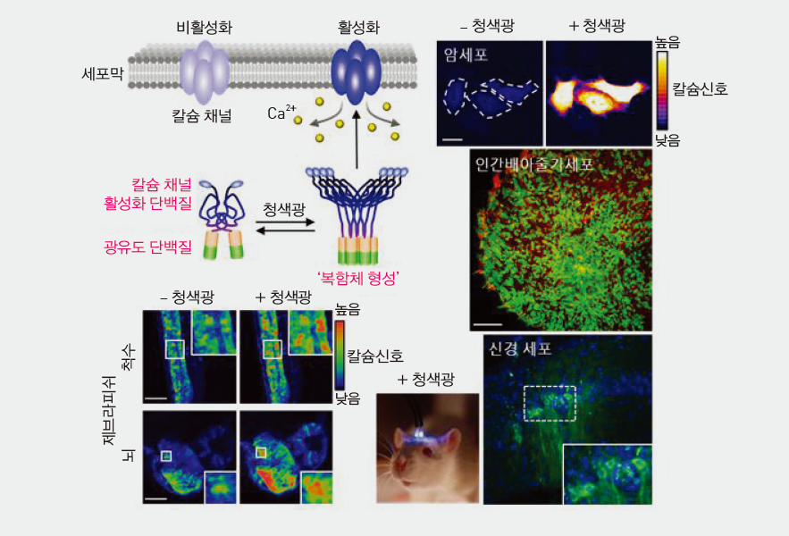

연구성과 10선
연구성과 10선
KAIST RESEARCH ACHIEVEMENTS
빛에 반응하는 식물단백질로
우리 몸의 칼슘농도를 조절할 수 있다
생명과학과 허원도ㆍ김대수ㆍ한용만
요약
칼슘이온은 세포성장은 물론 신경전달이나 근육수축 등 거의 모든 생명현상에 관여하기 때문에 세포 내 칼슘이온이 부족해지면 인지장애와 심장부정맥 등 다양한 질환으로 이어질 수 있다. 이번 연구에서 개발한 칼슘농도 조절 기술은 청색 빛에 반응하는 식물 단백질을 인간의 칼슘채널 활성화 단백질과 융합하여 빛에 의해 칼슘채널이 열리도록 설계되었다. 본 기술은 암세포, 인간배아줄기세포, 제브라피쉬(열대어 모델) 등에서 빛에 의한 세포 내 칼슘이온 유입을 유도하여 넓은 범용성을 보였고 쥐의 뇌에 적용하였을 때에는 칼슘이온을 통한 신경전달을 활성화시켜 쥐의 기억력을 증가시켰다. 이 기술은 빛을 쬐는 비침습적(non-invasive) 방식으로 약물이나 전기 자극을 대신해 칼슘이온 관련 질환을 치료하는 실마리를 제공하였다.
연구내용
칼슘은 세포 내에서 세포의 이동, 분화, 성장 등 다양한 기능에 관여하는 핵심물질로서 세포의 항상성(homeostasis)를 유지시키는 중요한 역할을 하기 때문에 경우에 따라 그에 맞는 적절한 농도를 유지하는 것이 매우 중요하다. 세포 내 칼슘 양이 부족해지면 인지장애와 심장부정맥 등 다양한 질환으로 이어질 수 있다. 이에 세포 내의 칼슘 양을 조절할 수 있는 여러 화학물질들이 개발되었지만 처리를 되돌릴 수 없고 광범위한 부위에 영향을 미칠 수 있어 생체모델 내에서의 적용이 어려웠다. 최근 각광받는 광유전학(Optogenetics) 분야에서는 다양한 파장대의 빛에 반응하는 식물 단백질들을 활용하여 세포 내 각종 단백질들과 세포의 기능을 조절하는 기술들이 개발되었다. 우리 연구진은 식물 단백질과 칼슘채널 활성화 단백질의 융합을 통하여 칼슘채널의 광(光)리모컨을 개발하고자 하였다.
본 연구에서는 청색 빛에 반응하여 복합체를 형성하는 식물의 광유도 단백질(Cryptochrome2)과 복합체를 형성하였을시에 칼슘채널을 활성화시키는 인간 단백질(STIM1)을 융합하여 기존 칼슘 양 조절기술 대비 5~10배 이상 세포 내 칼슘 양을 증가시킬 수 있는 세계 최고 효율의 칼슘 농도 조절 기술(OptoSTIM1)을 개발하였다. 빛은 스위치를 켜고 끔에 따라 가역적인 반응을 쉽게 구현할 수 있고 쬐어주는 시간 또는 공간을 자유롭게 조절할 수 있다. OptoSTIM1 기술은 빛의 강도와 노출시간에 따라 세포 내 칼슘이온의 유입양과 잔류시간을 조절하는 한편 빛을 차단하였을 때에는 칼슘채널의 폐쇄를 유도하여 양방향 조절이 가능토록 하였다.
 그림 1. 칼슘농도 조절 기술의 모식도와 광범위한 모델 시스템에 서의 적용 사례
본 OptoSTIM1 기술을 암세포, 신경세포, 인간배아줄기세포 등 다양한 세포군에 적용하여 빛을 쬐어주었을 때 모든 세포군에서 효율적인 칼슘이온 유입을 유도 할 수 있었고, 특히 인간배아줄기세포군집에서는 세포 간의 소통에 칼슘이온이 중요한 역할을 한다는 것을 보여주었다. 세포 수준뿐만 아니라 살아있는 생체 모델 중 제브라피쉬(열대어 모델)에서는 척수와 뇌에서 빛을 통한 칼슘 유입을 유도하여 OptoSTIM1 기술이 생명과학 또는 공학분야에서 광범위하게 응용될 수 있는 가능성을 보여주었다. 본 연구에서는 이 기술을 쥐의 뇌에 적용시켜 생체 내의 칼슘유입이 동물 모델의 행동학적인 부분에 미치는 영향과 향후 치료목적의 기술로도 응용될 수 있는지에 대한 가능성을 알아보고자 하였다. 쥐의 뇌 부위 중 공간에 대한 학습과 기억을 담당하는 해마에 바이러스 주입을 통해 OptoSTIM1을 발현시키고 빛으로 자극하자 뇌세포의 신경전달이 활성화되면서 기억력이 2배 강화됐다. 이는 전기충격같은 혐오자극(aversive stimulus)이 있었던 상황(공간)에 대한 두려움이 빛에 노출되지 않은 쥐에 비해 오래 지속된 것이다. 본 연구에서 개발된 칼슘 조절 기술은 폭넓은 응용성을 가지며 뇌질환 등 인간의 다양한 칼슘 관련 질환에서 칼슘이온의 역할을 규명하고 칼슘 조절을 통한 질병 치료 모델을 제시하는데 기여할 것으로 기대된다.
OptoSTIM1 기술은 빛을 사용하는 비침습적(non-invasive)인 방식으로 약물이나 전기자극을 대신해 칼슘이온 관련 질환을 치료하는 실마리를 제공한다. 본 기술은 칼슘이온 농도에 영향을 미치는 물질을 찾아내는 신약후보물질 발굴 플랫폼으로도 응용될 수 있을 것이라 기대한다.
연구비지원
ㆍ기초과학연구원(IBS-R001-G1)
ㆍ한국연구재단 StemCellProgram(2011-0019509)
ㆍKAIST KI 바이오융합연구소
ㆍ미래부 국가지정연구실사업, ICT and Future Planning(2011-0028772 to Daesoo K.)
연구실적
ㆍ논문 : Optogenetic control of endogenous Ca2+ channels in vivo. Nat. Biotechnol. 23, 1092-1096 (2015)
ㆍ국내특허 제 10-1369853호, 빛에 의해 세포내 칼슘 이온 농도의 제어가 가능한 융합단백질 및 그의 용도
ㆍ2015년 Nature Biotechnology 10월호에 표지논문 으로 선정, 국내외 언론보도 30여 회